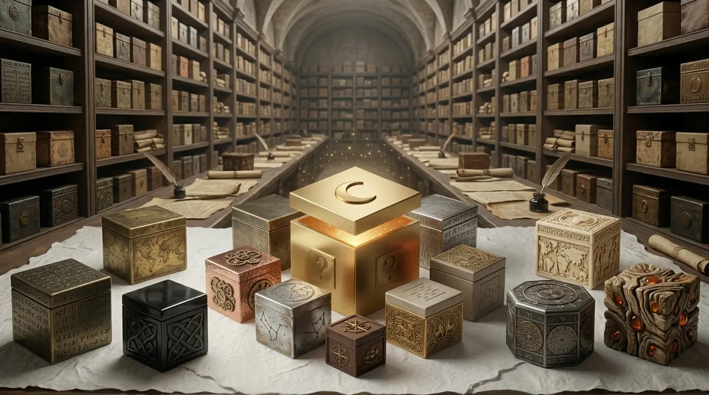
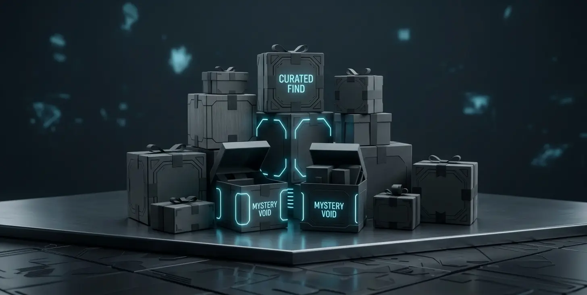

Recibimos
Personas nos envían objetos que ya no utilizan.

Descubre productos únicos y dales una segunda vida. Cada caja es una nueva aventura.
Descubrir cajasDescubre productos reacondicionados y seleccionados a mano dentro de nuestras Mystery Boxes.
Menos desperdicio, más sorpresas y precios que te sorprenderán.
No las dejes acumulando polvo. Nosotros podemos darles una segunda oportunidad. Cuéntanos qué tienes y lo valoramos.
→ Lo recuperamos

Descubre nuestras cajas de productos reacondicionados y encuentra algo inesperado.
Código: PRIMERACAJACada caja contiene una selección de productos que han recibido una segunda oportunidad.
Personas nos envían objetos que ya no utilizan.
Seleccionamos aquellos que merecen una segunda oportunidad.
Limpiamos, reparamos y preparamos cada producto.
Los clasificamos y creamos Mystery Boxes llenas de productos únicos.
Creemos que muchos objetos no deberían terminar olvidados en un cajón o convertirse en residuos.
Por eso recuperamos productos, los ponemos a punto y les damos una nueva oportunidad.
Reducimos el desperdicio dando nuevos usos a los productos.
Revisamos y preparamos cada artículo antes de ponerlo a la venta.
Utilizar algo de nuevo también es una forma de consumir de manera responsable.